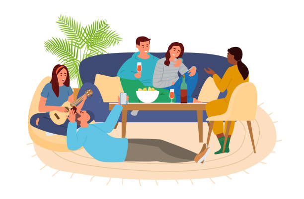

Outside of school I enjoy cooking for myslef and sometimes my family. For cooking is a really enjoyable and rewarding experience if done right. I feel thats a very useful skill worth developing in highschool and I just find it fun.
another thing I like to do outside of school is spend time with friends. This for me is a really important and valuable part of my life. Its also just super fun and whenever we do something its never boring.